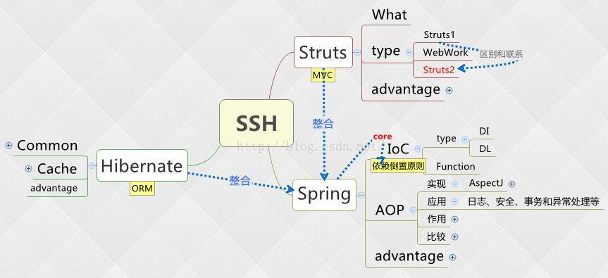

声明：除第一张思维导图为博主所制作，其他思维导图皆来自网络，若侵权，望告知，必删除。
JAVAEE学期总结
这个学期确实接触太多的经典的主流WEB开发框架，限于自己时间的因素，对于这些框架的学习也是稍微的了解，简单的demo勉强可以看懂，想真正的掌握还需要投入更多的精力进行学习。在整理思维导图的时候，浏览了很多优秀的博客网站，以及用思维导图讲解的框架，惊讶于这个学期原来已经接触了这么多的东西，惶恐于这些框架中的内容有些也只是了解有些甚至没有听说过，用老师的话说先过一遍然后可以在深入的学习，确实还需要时间对这些框架进入系统的学习和实践。谈到收获莫过于接触了这么多优秀的框架，大体上了一定的了解和认识，谈到失落莫过于时而调不出BUG就不想调了，虽然有时候会直接去老师办公室让老师帮忙调bug。也感谢老师的耐心教导。可能自己在这里投入的时间有点少吧，时而不在学习状态就不太想调bug，时而也有自己的一些想法。总之，通过这个学期的学习自己还是收获蛮多的，对于java整体知识的结构积累又多了一些。
1.主要学习内容框架及内容思维导图
2.上述思维导图中部分插入的思维导图图片
（1）SSH思维导图框架

（2） SSM框架思维导图
（3）Structs2框架思维导图
（4）SpringMVC框架思维导图
（5）springboot框架思维导图